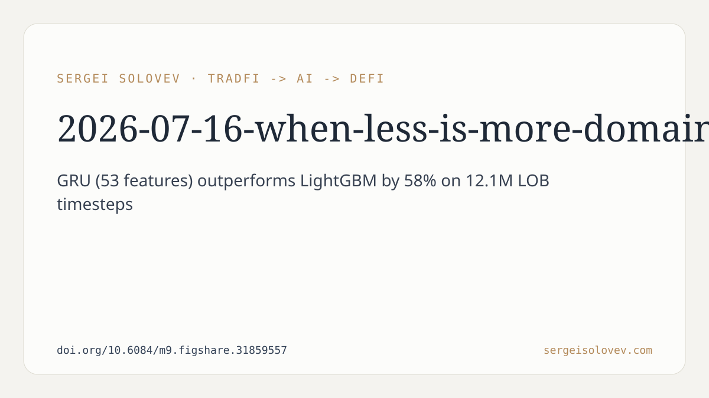

Limit order book (LOB) data is among the richest and most challenging inputs in quantitative finance. Every tick contains price levels, volumes, and the implicit geometry of supply and demand. The natural instinct when facing this richness is to engineer more features, combine more models, and throw more capacity at the problem. This preprint pushes back on that instinct in two concrete ways — and one of them is a finding that contradicts a common assumption about ensemble learning.
The proposed model, DA-BiGRU-CNN, makes one central design choice: it does not treat LOB data as a flat feature vector. Instead, it decomposes the input into two separate channels — price information and volume information — and routes each through its own dedicated bidirectional GRU encoder. The two encoders share features related to microstructure (the mechanics of how the book behaves), but they maintain separate representational pathways for price dynamics versus liquidity dynamics.
The reasoning behind this split is domain-motivated. Price levels and volume quantities in a limit order book are not just different numbers; they carry qualitatively different information. Price dynamics encode directional signals and spread behavior. Volume dynamics encode liquidity depth and order flow imbalance. Mixing them into a single encoder from the start forces the network to disentangle them implicitly. By separating them explicitly at the input stage, the architecture imposes a structure that matches what practitioners know about how order books work.
After the two GRU branches produce their temporal representations, the model fuses them through a multi-scale convolutional bottleneck: Conv1d layers with kernel sizes 3, 5, and 7. The choice of multiple kernel sizes is deliberate — different kernel sizes capture interactions at different temporal resolutions simultaneously. The bottleneck then compresses these fused representations before the final prediction.
Bidirectional GRUs are used rather than unidirectional ones at this stage. In sequence-to-label tasks over fixed windows, a bidirectional encoder can attend to both earlier and later timesteps within the window, which can be useful when mid-price dynamics involve patterns that are not strictly causal within the window context.
The more immediately practical finding is the "feature sufficiency" hypothesis. The paper compares a unidirectional GRU trained on 53 basic LOB features against one trained on 219 features that include rolling statistics, exponential moving averages, and lag and difference features. The result: statistically equivalent performance.
This is worth pausing on. A large part of the feature engineering effort in time-series forecasting goes into making temporal structure explicit — computing moving averages so the model "sees" the trend, computing lags so the model "sees" recent history, computing differences so the model "sees" rates of change. The finding here suggests that a recurrent network with adequate capacity learns these patterns from raw sequences anyway. The hidden state of a GRU, updated at each timestep, is already a compressed representation of the sequence's history. Feeding in pre-computed summaries of that same history adds redundant information rather than new signal.
The practical implication is not trivial. Feature engineering at scale is expensive: it multiplies storage requirements, increases preprocessing complexity, and creates more opportunities for lookahead bias. If the engineered features do not improve the model, the cost is borne without benefit. The 219-feature setup presumably required substantially more compute and pipeline complexity than the 53-feature baseline. The paper's claim is that this complexity did not pay off.
The caveat is that "statistically equivalent" performance does not mean the simple model is always preferable in every deployment context. But the result shifts the burden of proof onto the feature engineering step.
The third finding is the one that most directly contradicts a common heuristic. Ensembling is widely taught as a way to reduce variance: combine models that make different kinds of errors, and errors cancel out. Diverse model types — a recurrent network and a gradient boosting model, for instance — are often assumed to be good ensemble partners precisely because they approach the data differently.
The paper documents the opposite. Combining a GRU with LightGBM consistently made predictions worse compared to using the GRU alone. The paper calls this a "negative ensemble effect."
There are plausible reasons this can happen. Gradient boosting on tabular LOB features operates on a fundamentally different data representation than a sequence model. LightGBM sees feature vectors; the GRU sees sequences. If one model's predictions are substantially better calibrated to the target distribution — which the reported numbers suggest, with the GRU baseline achieving a weighted Pearson correlation of 0.266 and outperforming LightGBM by 58% — then averaging the two pulls the combined prediction away from the better model's output. Model diversity is only beneficial when the models are comparably good but differently wrong. When one model is clearly better, diversity drags performance toward the weaker model.
This is a useful negative result. It suggests that ensemble diversity is not a sufficient condition for ensemble improvement, and that the practice of combining sequential and tabular models on LOB data should not be assumed to help without empirical verification.
The preprint is evaluated on one dataset: 12,165 LOB sequences comprising 12.1 million timesteps. The domain-aware architecture is presented as an "architecturally principled alternative" to a flat-input baseline, not as a definitive state-of-the-art result. The feature sufficiency result is described as a hypothesis supported by this evidence, not a universal law. Both findings should be treated as hypotheses worth testing in other LOB datasets and market regimes.
The honest read is that the paper contributes a motivated architecture, a practically relevant negative finding about feature engineering overhead, and a documented failure mode for sequential-tabular ensembles. Each of these is useful on its own terms.
Full preprint: https://doi.org/10.6084/m9.figshare.31859557